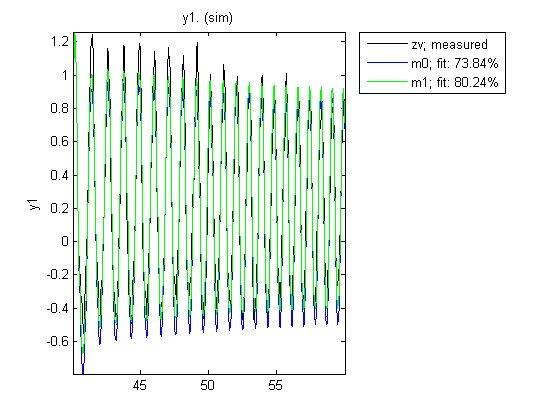
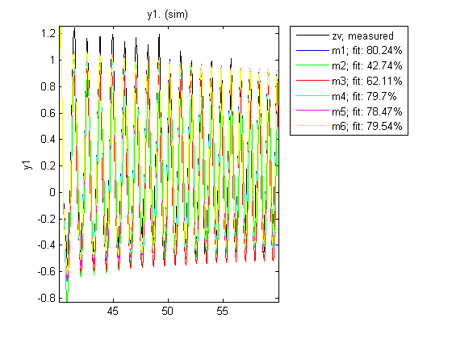
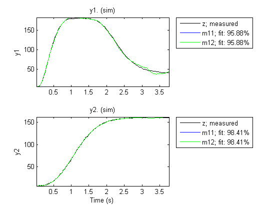

Nonlinear ARX Models with Custom Regressors
In this demo we illustrate the use of custom regressors in nonlinear ARX (IDNLARX) models, with examples of single-input-single-output (SISO) and multi-input-multi-output (MIMO) systems.
Contents
Introduction
In an IDNLARX model, each output is a function of regressors which are transformations of past inputs and past outputs. Typical regressors are simply delayed input or output variables. They are referred to as STANDARD REGRESSORS. It is also possible to use more advanced regressors in the form of arbitrary user-defined functions of delayed input and output variables. Such regressors are referred to as CUSTOM REGRESSORS.
Consider the example of an electric system with both the voltage V and the current I as inputs. If it is known that the electric power is an important quantity of the system, then it makes sense to form the custom regressor V*I. It may be more efficient to use appropriately defined custom regressors than to use standard regressors only.
SISO Example: Modeling an Internal Combustion Engine
The file icEngine.mat contains one data set with 1500 input-output samples collected at the a sampling rate of 0.04 second. The input u(t) is the voltage [V] controlling the By-Pass Idle Air Valve (BPAV), and the output y(t) is the engine speed [RPM/100]. The data is loaded and split into a data set ze for model estimation and another data set zv for model validation.
load icEngine
z = iddata(y,u, 0.04);
ze = z(1:1000);
zv = z(1001:1500);
Model Orders
Model orders [na nb nk], which are also used in the linear ARX model, allow to easily define standard regressors. The choice of model orders requires trials and errors. For this example let us use [na nb nk] = [4 2 10], corresponding to the standard regressors y(t-1),y(t-2),y(t-3),y(t-4),u(t-10),u(t-11).
First try with the standard regressors only. Notice that the LINEAR estimator is used, thus the resulting model is similar to a linear ARX model.
m0 = nlarx(ze, [4 2 10], linear);
The input name, output name and the list of regressors of this model are displayed below. Notice that the default names 'u1', 'y1' are used.
m0.InputName m0.OutputName getreg(m0)
ans =
'u1'
ans =
'y1'
Regressors:
y1(t-1)
y1(t-2)
y1(t-3)
y1(t-4)
u1(t-10)
u1(t-11)
Simple Regressors Defined by Strings
Simple custom regressors can be created in the string form as in the following example.
m1 = nlarx(ze, [4 2 10], linear, 'customreg', {'u1(t-10)^2', 'y1(t-1)^2'});
The total list of regressors, both standard and custom, is returned by GETREG.
getreg(m1)
Regressors:
y1(t-1)
y1(t-2)
y1(t-3)
y1(t-4)
u1(t-10)
u1(t-11)
u1(t-10)^2
y1(t-1)^2
Let us compare the two models on the validation data set zv.
compare(zv,m0,m1)
Custom regressors can be defined from any past input and output variables, not necessarily within the list of standard regressors. In the following example, there is no standard regressor at all.
m2 = nlarx(ze, [0 0 0], 'linear', 'customreg', ... {'u1(t-10)^3', 'u1(t-11)^3', 'y1(t-1)', 'sin(y1(t-4))'}); getreg(m2)
Regressors:
u1(t-10)^3
u1(t-11)^3
y1(t-1)
sin(y1(t-4))
Polynomial Regressors
Polynomial regressors can be easily created with the command POLYREG.
m3 = nlarx(ze, [4 2 10], 'lin'); pr = polyreg(m3, 'maxpower', 2, 'crossterm', 'off'); m3 = addreg(m3, pr); m3 = nlarx(ze, m3); getreg(m3)
Regressors:
y1(t-1)
y1(t-2)
y1(t-3)
y1(t-4)
u1(t-10)
u1(t-11)
y1(t-1).^2
y1(t-2).^2
y1(t-3).^2
y1(t-4).^2
u1(t-10).^2
u1(t-11).^2
The Custom Regressor Object Constructor
The string form is convenient for the creation of simple custom regressors. The custom regressor object constructor is more powerful for the creation of arbitrary regressors.
In the following example, a regressor is created as the cos function of the variable named 'u1' and delayed 10 samples, in other words: r1 = cos(u1(t-10)). The logic value at the last input argument indicates if the custom regressor is vectorized or not. Vectorized regressors are faster in computations, but require cares in the function indicated at the first input argument.
r1 = customreg(@cos, 'u1', 10, true)
Custom Regressor:
String expression: cos(u1(t-10))
Function: @cos
Arguments: {'u1'}
Delays: 10
Vectorized: 1
TimeVariable: 't'
In this example, 3 variables are involved. Notice the operator ".*" instead of "*" for vectorized regressor.
F = @(x1,x2,x3)sin(x1.*x2+x3); % Anonymous function r2 = customreg(F, {'y1', 'u1', 'u1'}, [1 10 11], true)
Custom Regressor:
String expression: sin(y1(t-1).*u1(t-10)+u1(t-11))
Function: @(x1,x2,x3)sin(x1.*x2+x3)
Arguments: {'y1' 'u1' 'u1'}
Delays: [1 10 11]
Vectorized: 1
TimeVariable: 't'
The two created custom regressors can be used in an IDNLARX model.
m4 = nlarx(ze, [4 2 10], 'lin', 'customreg', [r1;r2]); getreg(m4)
Regressors:
y1(t-1)
y1(t-2)
y1(t-3)
y1(t-4)
u1(t-10)
u1(t-11)
cos(u1(t-10))
sin(y1(t-1).*u1(t-10)+u1(t-11))
Using Custom Regressors with Nonlinearity Estimators
Typically the LINEAR estimator is used with custom regressors, as in the previous examples. It is also possible to apply nonlinearity estimators.
m5 = nlarx(ze, [4 2 10], 'wavenet', 'customreg', [r1;r2]); getreg(m5)
Regressors:
y1(t-1)
y1(t-2)
y1(t-3)
y1(t-4)
u1(t-10)
u1(t-11)
cos(u1(t-10))
sin(y1(t-1).*u1(t-10)+u1(t-11))
Because custom regressors are typically nonlinear, there is thus a redundancy of nonlinearity when a nonlinearity estimator is applied to custom regressors. To avoid such redundancy, custom regressors can be excluded from the nonlinear block of the IDNLARX model, by specifying that only the standard regressors are nonlinear.
m6 = nlarx(ze, [4 2 10], 'wavenet', 'customreg', [r1;r2], 'nlreg', 'standard'); m6.nlreg % Indices of nonlinear regressors in the following list. getreg(m6)
ans =
1 2 3 4 5 6
Regressors:
y1(t-1)
y1(t-2)
y1(t-3)
y1(t-4)
u1(t-10)
u1(t-11)
cos(u1(t-10))
sin(y1(t-1).*u1(t-10)+u1(t-11))
The various models can be compared together (may take a long time).
compare(zv, m1,m2,m3,m4,m5,m6)
MIMO Example: Modeling a Motorized Camera
The file motorizedcamera.mat contains one data set with 188 data samples, collected from a motorized camera at a sampling rate of 0.02 second. The input vector u(t) is composed of 6 variables: the 3 translation velocity components in the orthogonal X-Y-Z coordinate system fixed to the camera [m/s], and the 3 rotation velocity components around the X-Y-Z axis [rad/s]. The output vector y(t) contains 2 variables: the position (in pixel) of a point which is the image taken by the camera of a fixed point in the 3D space. We create an IDDATA object z to hold the loaded data:
load motorizedcamera z = iddata(y, u, 0.02, 'Name', 'Motorized Camera', 'TimeUnit', 's');
Using custom regressors in the MIMO case is not very different from the SISO case. It essentially needs to know that each output has its own custom regressors. The custom regressors of all the outputs are packed into a cell array before being inserted into the MIMO IDNLARX model.
% When the string form is used, the custom regressors are given as an % ny-by-1 cell array of cell arrays of strings, ny being the number of % outputs of the model. nanbnk = [ones(2,2), 2*ones(2,6), ones(2,6)]; m11 = nlarx(z, nanbnk, 'lin', 'customreg', ... {{'u1(t-1)^2', 'y2(t-1)^3'};{'u5(t-1)*u6(t-1)'}});
The custom regressor constructor can also be used. The following regressors are equivalent to the previous ones created in the string form, except that here the regressors can be made vectorized with the custom regressor constructor.
F1 = @(x)x.^2; r1 = customreg(F1, 'u1', 1, true); F2 = @(x)x.^3; r2 = customreg(F2, 'y2', 1, true); F3 = @(x1,x2)x1.*x2; r3 = customreg(F3, {'u5','u6'}, [1 1], true); m12 = nlarx(z, nanbnk, 'lin', 'customreg', {[r1; r2], r3});
The numerical equivalence of the two models can be checked by comparing them with the data.
compare(z,m11,m12)
Additional Information
For more information on identification of dynamic systems with System Identification Toolbox™ visit the System Identification Toolbox product information page.